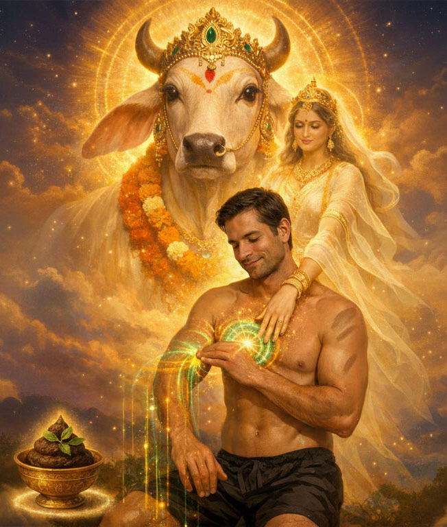
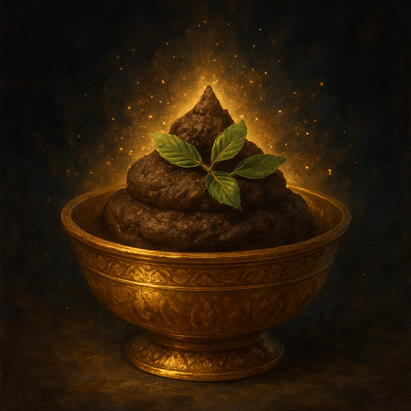
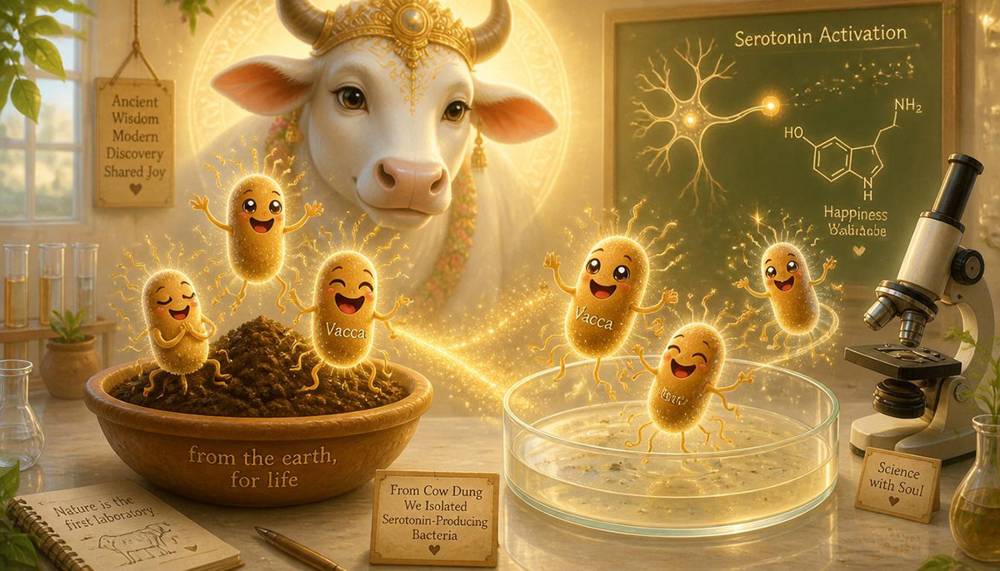
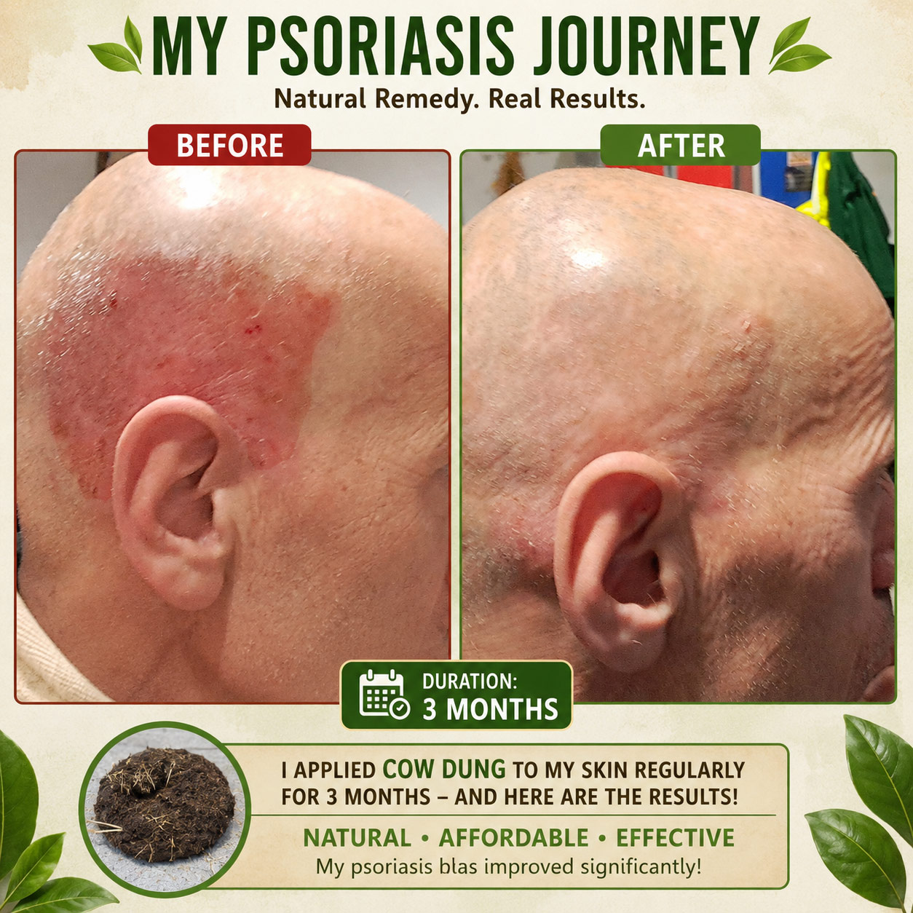
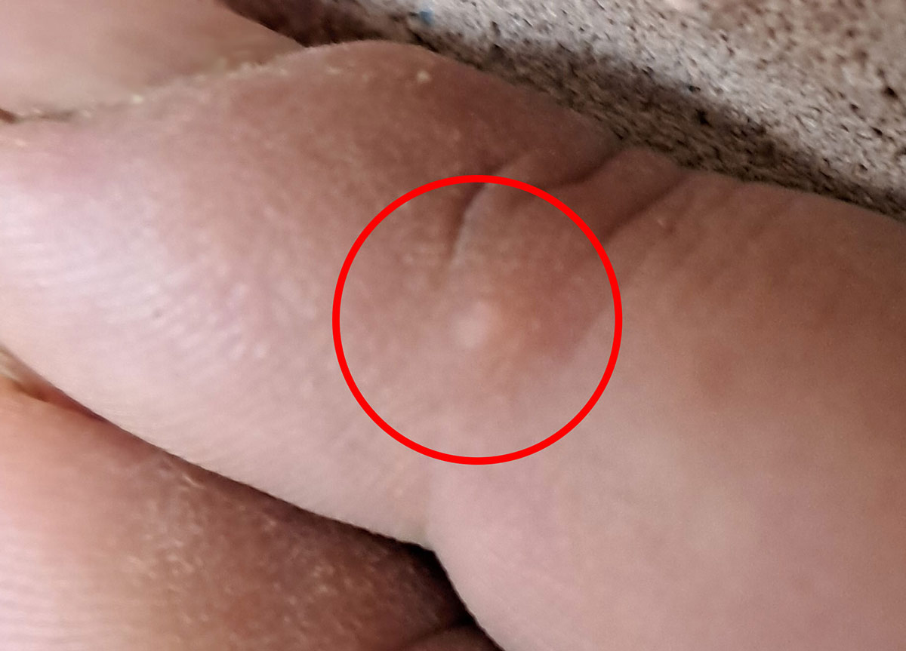

The Earth's First Medicine
Free, abundant, and more powerful than anything you have been told to expect.
Of all the gifts the cow offers, this is the one nobody expects.
It is free. It is available wherever a cow grazes. It requires no collection method, no timing, no equipment, no preparation — simply a handful of fresh dung and a few quiet minutes. And yet for those who have allowed it to meet their skin, it has done things that years of other treatments, practices, and preparations were unable to do.
The surprise is not what it cures. The surprise is what it does before it cures anything: a shift in mood, a lightness in the breath, a quality of inner space that is both immediate and unmistakable — as if something that was missing has quietly returned. From that ground, healing follows almost as a secondary effect.
This page gathers everything known about cow dung — from the oldest texts to the newest research, from a personal account of fourteen years of psoriasis clearing in two weeks, to a step-by-step guide for applying it in a modern shared home without anyone around you noticing.
All pointing in the same direction: Cow dung is not waste. It is pure medicine, a sacred purifier, and a gift that heals body, mind, and spirit.

"Pañca-gavya, the five products received from the cow — namely milk, yogurt, ghee, cow dung and cow urine — are required in all ritualistic ceremonies performed according to the Vedic directions. Cow urine and cow dung are uncontaminated, and since even the urine and dung of a cow are important, we can just imagine how important this animal is for human civilization." Srimad Bhagavatam 8.8.11 — Purport by A.C. Bhaktivedanta Swami Prabhupada
"Gomaye vasate lakshmi, gomutre dhanvantari" Goddess Lakshmi (health, beauty, prosperity) resides in cow dung; Lord Dhanvantari (divine physician) dwells in cow urine.
"Cow dung is the supreme purifier; it removes all impurities, destroys disease-causing elements, and increases sattva — the pure, luminous quality of body and mind. Applied to the skin, it restores natural radiance, clears blemishes, and protects from infection."
"All that comes from the cow is pure, holy, and healing. Her dung, when applied, is a balm for the skin, a cleanser of the blood, and a destroyer of pain and fever. It brings health where there is sickness, and peace where there is distress."
"When cow dung is smeared upon the body, it acts as a shield against all ill health. It cools inflammation, heals wounds, and makes the skin soft, clear, and luminous. It is not waste — it is medicine given freely by the cow."
"One should never feel repugnance toward cow dung or cow urine. They are not impure; they are pure, healing, and sanctifying. They cure diseases of the skin, blood, and nerves, and they purify the body and soul completely."
"In the dung and urine of the cow dwell all the divine powers. Whoever uses them with respect obtains longevity, beauty, freedom from disease, and spiritual clarity."
"Cow dung mixed with water and applied to the skin removes itching, rashes, eczema, and all chronic skin conditions. It is the best remedy for burning sensations, sunstroke, and toxins in the blood."
"Bathing with cow dung confers fortune, health, and beauty; it removes all sins and protects from misfortune. There is no purifier equal to it in all the three worlds."
"Gomaya (cow dung) is anti-septic, antibacterial, and cooling. It heals wounds, reduces swelling, clears the complexion, and purifies the blood. It balances all three doshas, rejuvenates tissues, and is a supreme rasayana — a substance that restores youth and vitality."
"When applied to the skin, it draws out toxins, stops infection, and brings natural glow. It is the first and most gentle medicine of the earth."
"Cow dung is excellent for healing burns, boils, and skin diseases. It is soft, cooling, and nourishing; it promotes rapid repair of tissues and leaves no scar. It is pure, safe, and works when all else fails."
"The body should be rubbed with cow dung to remove all impurities, to make it holy, and to prepare it to receive divine energy. It cleanses more deeply than water alone, and makes one worthy of blessings."
"Cow dung is the destroyer of all ailments. It cures leprosy, itching, fever, and poisoning. It is pure, it is nectar, it is the gift of the cow to save humanity from suffering."
Cow dung is present in major Hindu rituals — from birth to death, from home consecration to deity installation. It is used to purify floors, walls, and altars. It is burned to produce vibhuti, the sacred ash that yogis and sadhus apply to the body daily. The tradition is unambiguous: this substance is not waste. It is medicine. It is purifier. It is, in the deepest Vedic sense, a vehicle of the sacred.
First discovered in cow dung, now confirmed by science.

Mycobacterium vaccae is a naturally occurring, non-pathogenic bacterium found in healthy soil worldwide — and in highest concentration in cow dung. It was first brought to mainstream scientific attention when Dr. Mary O'Brien of the Royal Marsden Hospital, London, began administering it to lung cancer patients to boost their immune systems. She noticed something unexpected: her patients reported being notably happier, experiencing less pain, and showing improved vitality.
Subsequent research at the University of Bristol confirmed the mechanism: M. vaccae stimulates a specific group of neurons in the brain that produce serotonin — the primary mood-regulating chemical — in a pattern comparable to that of antidepressant medications, but without any of their side effects.
The University of Colorado's research group, led by Dr. Christopher Lowry, has since published multiple studies confirming that immunisation with M. vaccae stabilises the gut microbiome, induces a shift toward stress resilience, and promotes sustained wellbeing. The effect is not temporary. It builds.
Mice given M. vaccae navigated mazes twice as fast as controls, with lower anxiety and better focus — Sage Colleges, Troy NY, 2010.
Contact with M. vaccae activates serotonin-producing neurons in the brain, mirroring the action of antidepressant drugs — University of Bristol.
Cow dung contains antifungal compounds and antibacterial agents active against E. coli, Staphylococcus aureus, Pseudomonas, and Candida.
Immunisation with M. vaccae promotes a sustained, proactive stress response and long-term wellbeing — University of Colorado Boulder, 2019.
Note: The research above was conducted primarily with soil-borne M. vaccae through injection or ingestion. Skin application has not yet been formally studied as a delivery route. The traditional Vedic practice of topical application predates this research by five thousand years.
Spent his childhood playing in cow dung. This is not a coincidence.
"The child was thoroughly washed with cow urine and then smeared with the dust raised by the movements of the cows. Then different names of the Lord were applied with cow dung on twelve different parts of His body, beginning with the forehead." Srimad Bhagavatam 10.6.20 — The childhood of Krishna among the cowherds of Vrindavan
There is a detail in the accounts of Krishna's childhood that is often read as simply charming, and rarely examined for what it may actually be describing. Krishna, as a child among the cowherds of Vrindavan, is depicted playing in cow dung — rolling in it, covered in it, entirely unconcerned, as children at play often are.
Krishna is also, in the very same tradition, remembered as the supreme artist — the flute player whose music could stop time, the dancer, the poet, the strategist, the one whose creativity and charm were so total that they are described as divine attributes in themselves. The tradition does not explicitly draw a causal line between these two facts. But once you have experienced, even briefly, what direct skin contact with cow dung can do to creativity, fluency of thought, and a sense of "being in the zone" — the line draws itself.
"As these realizations crystallized, I recalled scriptural accounts of the young Sri Krishna playing joyfully in the cow dung as a child. I immediately connected his legendary creative brilliance — his timeless mastery of music, dance, and poetry — to this specific childhood activity." Excerpt from the author's personal account
Cow dung may be not merely a remedy for the sick — it may be one of the most powerful and most overlooked developmental tools available to a growing child, or to an adult seeking to recover the playful, fluid, fearless creativity of childhood. Human beings develop their gifts only in an atmosphere of love and support. Where the ground is constantly fed with it, the tree grows almost on its own.
By Momchil Pavlov (Manu), spiritual name Sri Nithya Uttarananda
My journey with cow dung began in August 2017, while living at Nithyananda Peetham ashram in Bengaluru, India. For seven years I had suffered from psoriasis, and after reading about its healing power, I started applying fresh cow dung to my whole body, leaving it on for a few minutes before rinsing.
The very next morning, I was astonished: I felt vibrant, joyful, and unusually light in body and mind. My dreams became crystal clear, and I felt a deep sense of peace — like being held in the lap of a loving mother or goddess. Within 2–3 weeks, my psoriasis cleared completely. Even more surprisingly, my skin became smoother, wrinkles faded, and I looked years younger. It works from the inside out: it floods you with love and calm, and true beauty naturally follows.
Beyond physical healing, it transformed my whole being. My creativity soared, I spoke with new clarity and confidence, and negative thoughts or anxieties simply dissolved. It acted like a powerful shield against stress and bad energy. I realized: the cow is a goddess, and her dung carries pure, divine, maternal love that touches you just by making contact with your skin.
I later tested it with Western breeds in the UK. Though the smell was stronger, the spiritual and healing power remained fully present. When I returned to the UK in 2025 and began volunteering at the cow farm at Bhaktivedanta Manor, I started again. Within weeks, my old peace and joy returned, and my psoriasis healed once more.
Cow dung is not just a remedy; it is a direct, simple, and effortless way to experience the divine. You don't need complex rituals or books — just let it touch your skin, and it will do the rest.
See the full story →Sixteen years of psoriasis. Nothing that held significant result for longer than a month. The first time I applied cow dung — evening after evening, a few minutes each time, washed off without soap — the plaques were gone within two to three weeks. Years later, after a long break from the practice, I started again from scratch. This time it took three months to reach the same clear result.
Both times, the food was identical throughout: Indian-style vegetarian meals, cooked and served at the temple. And both times, cow dung worked regardless.

Photographs taken before and after each period of application. No other treatments were introduced during either period.

The wart on the middle finger — which had remained for a long time — nearly disappeared entirely after cow dung application.
Cow dung can be used in a short evening application — a few minutes on the skin, rinsed off without soap — or left on overnight inside dedicated dark clothing, or dried on the skin with a hairdryer and worn through the day. Fresh dung from a cleanly fed cow needs little or no odour management; for stronger-smelling material, two to five drops of lemongrass, cedarwood, or tea tree oil eliminates the smell entirely, as does a thin layer of Gopi Chandan clay applied over it.
It can be used alone or combined with cow urine — either mixed together or layered, with urine applied first. A thin coating is always enough; regularity matters far more than quantity.
The full step-by-step guide — sourcing, shelf life, clothing, smell management, basic and extended application methods, and where to find cow dung in Hertfordshire — lives on the dedicated How to Apply page.
How to Apply →